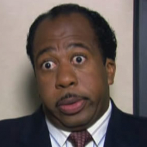

| Home | The Seasons | The Characters | The Reviews |

The Office |
Stanley James Hudson is a fictional character from the US television series The Office. He is played by Leslie David Baker. Stanley has no direct counterpart in the UK series. His closest counterpart is Malcolm, as he is given some of Malcolm's lines in the pilot, and is frequently openly critical of Michael Scott throughout the series (as Malcolm was of David Brent).